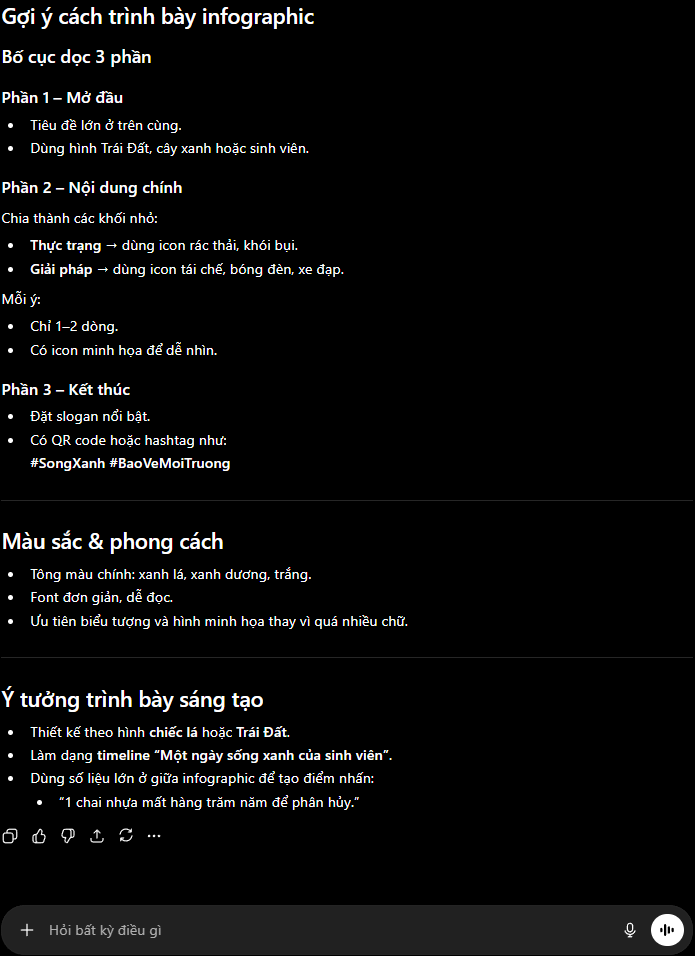
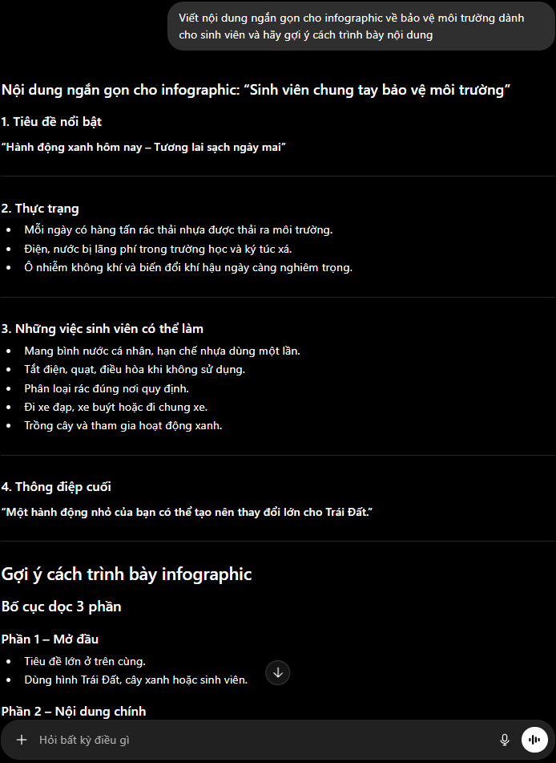
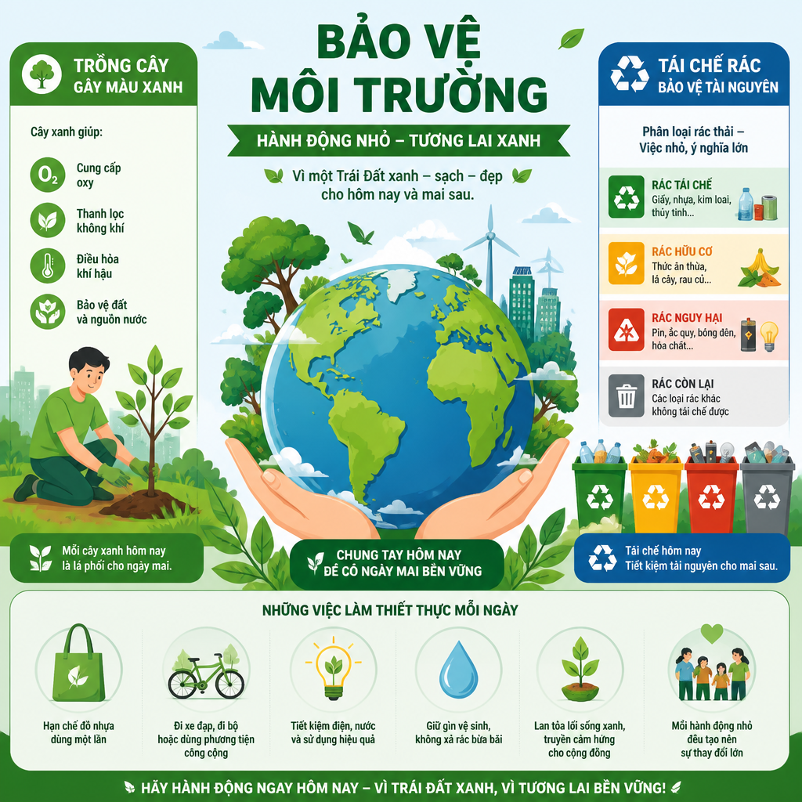
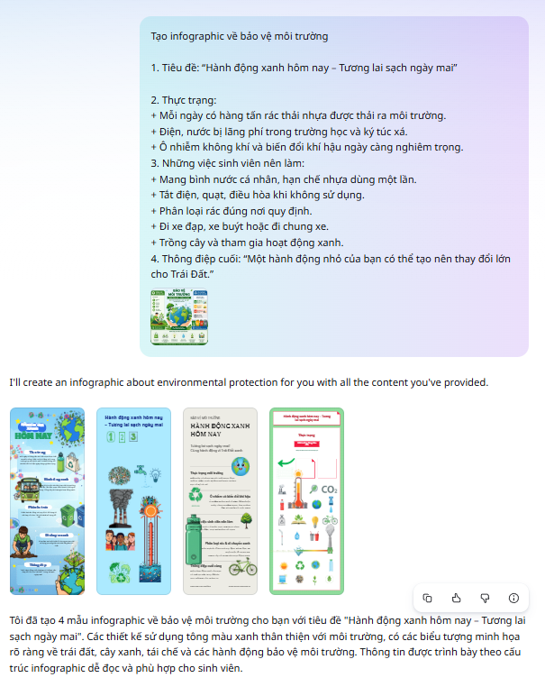

Sáng tạo Nội dung Số với AI
Dự án thiết kế infographic "Bảo vệ Môi trường" bằng cách kết hợp 3 công cụ AI: ChatGPT tạo nội dung, DALL·E tạo hình ảnh, và Canva AI thiết kế cuối cùng.
🌍 Giới thiệu dự án
Infographic "Bảo vệ Môi trường cho Sinh viên"
Nâng cao nhận thức về ô nhiễm rác thải nhựa, tiết kiệm năng lượng và trồng cây xanh. Đồng thời tìm hiểu cách ứng dụng AI trong quy trình sáng tạo nội dung số.
Infographic kỹ thuật số, bố cục rõ ràng, màu sắc xanh lá và xanh dương, nội dung ngắn gọn dễ hiểu.
⚡ Bộ công cụ AI được sử dụng
Hỗ trợ viết nội dung và lên ý tưởng
Tạo hình ảnh minh họa từ văn bản
Thiết kế infographic chuyên nghiệp
🔁 Quy trình sáng tạo 3 giai đoạn
📝 Prompt đã sử dụng
"Viết nội dung ngắn gọn cho infographic về bảo vệ môi trường dành cho sinh viên và hãy gợi ý cách trình bày nội dung."
💡 Phần đã chọn lọc & tích hợp:
- ✓ Tiêu đề: "Trái Đất cần bạn!"
- ✓ Thực trạng: 3 vấn đề cốt lõi (Rác nhựa, Năng lượng, Cây xanh)
- ✓ Giải pháp hành động cụ thể cho từng vấn đề
- ✓ Thông điệp kêu gọi hành động ở cuối
📊 Đánh giá ChatGPT
ChatGPT (GPT-4o)
Tạo nội dung văn bản & ý tưởng
Tạo nội dung nhanh, có nhiều ý tưởng đa dạng, văn phong rõ ràng và dễ điều chỉnh.
Một số nội dung còn khá chung chung, cần chỉnh sửa để phù hợp mục đích sử dụng cụ thể.
🎨 Prompt tạo ảnh DALL·E
"Tạo hình minh họa về bảo vệ môi trường với cây xanh, tái chế rác và Trái Đất xanh sạch đẹp, phong cách infographic hiện đại."
🖼️ Kết quả & điều chỉnh:
Hình ảnh được tạo ra có màu sắc tươi sáng phù hợp chủ đề. Tuy nhiên một số chi tiết cần chỉnh sửa thêm bằng Canva để phù hợp bố cục infographic chung.
📊 Đánh giá DALL·E
DALL·E (via ChatGPT)
Tạo hình ảnh AI từ văn bản
Tạo hình ảnh nhanh và đẹp, có tính sáng tạo cao, hỗ trợ minh họa trực quan cho infographic.
Một số hình ảnh chưa đúng hoàn toàn với ý tưởng, cần chỉnh sửa thêm để phù hợp với thiết kế tổng thể.
🖼️ Quy trình thiết kế trên Canva
- Chọn mẫu infographic có bố cục phù hợp chủ đề môi trường.
- Chèn nội dung văn bản đã được chọn lọc từ ChatGPT.
- Chèn hình ảnh được tạo từ DALL·E vào các vị trí phù hợp.
- Điều chỉnh màu sắc chủ đạo: Xanh lá + Xanh dương.
- Kiểm tra bố cục tổng thể, xuất file và lưu thành phẩm.
- ✓ Nội dung ngắn gọn, dễ hiểu, dễ nhớ.
- ✓ Hình ảnh trực quan, sinh động.
- ✓ Bố cục rõ ràng, cân đối.
- ✓ Màu sắc chủ đạo phù hợp chủ đề môi trường.
📊 Đánh giá Canva AI
Canva AI
Thiết kế infographic
Dễ sử dụng, có nhiều mẫu đẹp để lựa chọn, thiết kế nhanh chóng và chuyên nghiệp.
Một số tính năng AI nâng cao cần trả phí. Tiếng Việt đôi khi bị lỗi phông chữ khi xuất file.
📸 Hình ảnh minh chứng sản phẩm
Các ảnh chụp quá trình thực hiện và sản phẩm infographic hoàn chỉnh. Nhấn để xem chi tiết:




🧠 Phân tích vai trò của AI trong sáng tạo
🟢 Những phần AI làm tốt
- → Hỗ trợ tìm ý tưởng nhanh chóng trong giai đoạn brainstorming.
- → Tạo nội dung và hình ảnh chất lượng trong thời gian ngắn.
- → Giúp thiết kế sản phẩm chuyên nghiệp hơn so với tự làm thủ công.
- → Tiết kiệm thời gian tìm kiếm template và font chữ phù hợp.
🔴 Những hạn chế cần lưu ý
- → AI chưa hiểu hoàn toàn ý tưởng cá nhân — luôn cần con người định hướng.
- → Nội dung đôi khi còn chung chung, thiếu tính cá nhân hóa sâu.
- → Hình ảnh AI cần chỉnh sửa thêm để đúng ý tưởng 100%.
- → Cần kiểm tra bản quyền và tính chính xác của nội dung AI tạo ra.
"AI giúp quá trình sáng tạo nội dung trở nên nhanh hơn và thuận tiện hơn. Tuy nhiên, con người vẫn cần chỉnh sửa và chọn lọc để sản phẩm cuối cùng phù hợp và mang dấu ấn cá nhân."